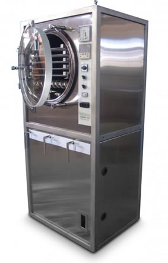
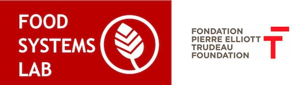

What if it was possible to reduce food waste at different scales globally by avoiding spoilage from happening in the first place? Ever since humans have harvested, we've tried to find ways to preserve it. Freeze drying is the best way to make food shelf stable without preservatives, chemicals, etc. Until now, freeze drying has never been an affordable method.
Products
Freeze-drying is a technology that removes water from food to prevent spoilage and increases the lifetime of food.
Freeze-drying is not new.
It's been around since the 80s and has been feeding both astronauts and campers.
Traditionally, this technology has been out of reach of regular people.
Until now.
Our technology is significantly more affordable. And it takes 1/3 of time of other freeze-drying brands.

